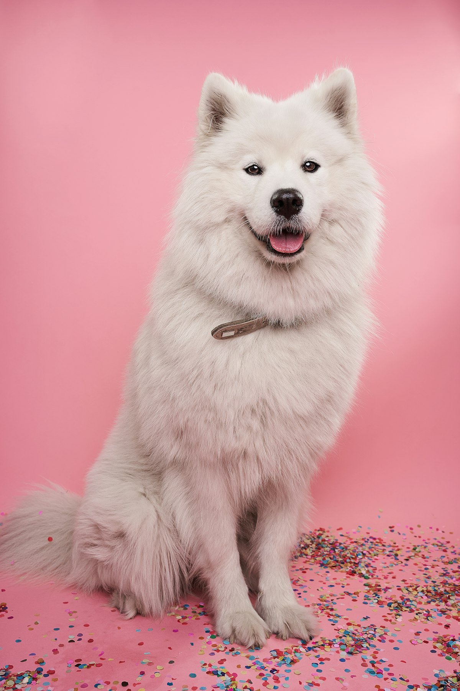
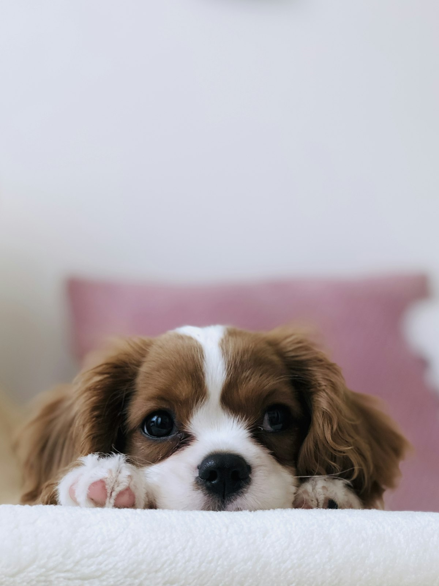

Escutamos primeiro
Idade, porte, raça e rotina: quanto mais a gente sabe, melhor a indicação — e menos desperdício de dinheiro para você.
Somos uma loja de bairro para quem tem pet em casa e para quem tem animais na roça — com a mesma atenção, variedade e bom humor de sempre.
A AGROPETZ nasceu da ideia simples de que comprar ração e produtos para os animais deveria ser fácil, rápido e sem enrolação. Aqui, o atendimento é cara a cara: a gente pergunta a idade, o porte e a rotina do seu pet antes de indicar qualquer produto.
Atendemos tutores de cães e gatos e também vizinhos que precisam de produtos agropecuários para aves e para o campo. O mesmo cuidado, o mesmo sorriso, para todos.



Idade, porte, raça e rotina: quanto mais a gente sabe, melhor a indicação — e menos desperdício de dinheiro para você.
Rações e petiscos que saem todo dia, com reposição frequente para você não voltar para casa de mãos vazias.
Mensagem pronta, preço confirmado e produto separado: comprar aqui é só chegar e levar.

Se existe uma opção melhor para o seu pet ou para o seu bolso, a gente fala — mesmo que não seja a mais cara.
Trabalhamos com marcas conhecidas e produtos que a gente próprio usaria em casa.
Troca de ração, quantidade por dia, o que dar ou não dar: pergunte sempre. Para isso estamos aqui.
Passe no endereço ou chame no WhatsApp: a gente confere o produto e deixa tudo separado para você.